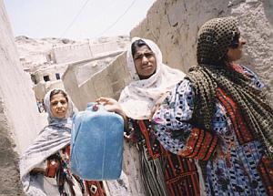

پذيرش > سایت نوشته ها > تغییر برای برابری- جنبش زنان در زاهدان- قدر این تلاش ها را بدانیم / وبلاگ (...)


 تغییر برای برابری- جنبش زنان در زاهدان- قدر این تلاش ها را بدانیم / وبلاگ پویا تغییر برای برابری- جنبش زنان در زاهدان- قدر این تلاش ها را بدانیم / وبلاگ پویا
15 آبان 1386 - - نسخه قابل چاپ
چند وقت پیش از طریق دوستان وبلاگ نویس با این سایت که درجه ی "اعتیاد" وبلاگی را نشان می داد آشنا شدم. با جواب دادن به سوال ها معلوم شد که درجه ی اعتیاد وبلاگی من 67 درصد است. همین که پس از یک سمینار دو روزه ی پر از کار و خسته کننده، پای وبلاگ خوانی و وبلاگ نویسی نشسته باشی نشانه ی این است که آن سایت زیاد هم بی اعتبار نمی گوید.
چقدر خوشحال شدم وقتی خبر رسیدن پای جنبش برابری، کمپین 1 میلیون امضا، را به زاهدان خواندم. دوستان فعال جنبش زنان در زاهدان شروع به گذاشتن جلسات مرتب کرده اند و حتما برای توضیح خواسته های کمپین و جمع امضا میان زنان شهر خواهند رفت. من سالها در بلوچستان و بخصوص در زاهدان زندگی کرده ام و از نزدیک و هر روزه با محرومیت مردم این منطقه بسر برده ام. شاید برای همین است که فکر می کنم بتوانم قدر و ارزش این کار دختران و زنان زاهدانی را بفهمم.
گفتن و خواندن و به تماشای فیلم محرومیت مردم نشستن یک چیز است، با آنها زندگی کردن یک چیز دیگر. بخصوص که سالهای نوجوانی باشد و هم با بچه ها و در خانه های شان زندگی کنی و هم آنقدر عقلت برسد که فقر و محرومیت را ببینی و دیگر یادت نرود. زنان بلوچ و سیستانی، هم بار ِ فقر منطقه را بدوش می کشند و هم باید تاوان زن بودن شان را در روابط محدود قومی و طایفه ای بدهند. بخش بزرگی از زندگی زنان بلوچ تابع مقررات پدرسالارانه ی طایفه ای است.
این محرومیت و قوانین قومی در مناطق دیگر مثل کردستان و لرستان هم هست. اتفاقا بیشترین میزان محدودیت ها و خودکشی و خودسوزی دختران جوان و زنان هم در همین مناطق است. فکر می کنم لرستان از نظر افسردگی و خودکشی زنان مقام بی افتخار اول را دارد. درباره ی بلوچستان کمتر می دانیم. نه اینکه نیست، شاید هنوز آماری به بیرون درز نکرده است.
مناطقی مثل کردستان یک مزیت دیگر هم بر جایی مثل بلوچستان دارند. جنبش ها و احزاب سیاسی، مثل حزب دموکرات، در کردستان ده ها سال است که فعال اند و طبیعتا افکار جدید را با خودشان به منطقه برده اند و شاید کار زنان برای فعالیت در آنجا کمی راحت تر باشد. لااقل این هست که خود زنان فعال شاید امکان بیشتری برای دور هم جمع شدن و تبادل تجربه داشته باشند. می دانیم که تشکل ها و احزابی با افکار جدید، در سیستان و بلوچستان سابقه ی قابل توجهی ندارند و برای همین، سنت کار جمعی برای فعالان زن شاید خیلی کمتر باشد. البته امروزه دانشگاه آزاد حتما در شهر هست که دختران دانشجو می توانند فرصت و جایی برای بحث درباره ی حقوق زنان پیدا کنند. و اینترنت و وبلاگ که واقعا دیگر مرز نمی شناسد. همه ی این محدودیت ها و در عین حال امکانات هر چند ناچیز، قدر و ارزش این تلاش جمعی زنان زاهدانی را باز هم بیشتر می کند.
از طرف دیگر خود کمپین 1 میلیون امضا است که به همت دوستان به دورافتاده ترین شهرهای کشور هم رسیده است. بسیاری هستند - و از جمله در همین وبلاگستان ما- که با تمسخر و تحقیر از کمپین حرف می زنند و فعالان را حتی به خیالبافی و منحرف کردن جنبش "واقعی" زنان متهم می کنند. که این جنبش "واقعی" از نظر این افراد یعنی تعدادی شعارهای بدون پشتوانه و کلیشه ای و کلّی که در هر شرایطی و در هر موقعیتی می توان تکرار کرد و به این تکرار دلخوش بود، بدون اینکه در عمل اتفاقی بیافتد و یک راه حل عملی ارائه کند.
در حالیکه کار اصلی کمپین 1 میلیون امضا همین تماس رو در رو با زنان و بطور کلی با مردم است. با مردم حرف زدن و توضیح دادن است. ارتباط است. بدون ارتباط عملی با توده ی زنان و مردم چطور می شود از خواسته های آنها و اولویت های آنها حرف زد؟ همین ارتباط دو جانبه با زنان، ارزش بسیار بزرگ تلاش فعالان کمپین است.
زن بلوچ نه روزنامه و نشریه - حتی اگر اجازه ی نشر داشته باشد که ندارد- می خواند، نه کامپیوتر در خانه دارد که سایت و وبلاگ من و تو را بخواند و نه در رادیو و تلویزیونی که می شنود و می بیند، حرفی از حقوق و وضعیت زنان است. شاید همین کار جمعی دختران و زنان زاهدانی، تنها منبعی باشد که بتوان با مردم بلوچ و سیستانی درباره ی وضعیت زنان به گفتگو نشست. و صد البته همین وضعیت در بقیه ی جاهای کشور هم هست.
مطمئنم که فعالان زاهدانی انتظار ندارند که با تعداد نه چندان زیاد و امکانات کم و در وقتی نه چندان طولانی، بشود افکار صدها و هزاران ساله ی سنتی را درباره ی زنان عوض کرد. افکار و طرز زندگی که مجموعه ی پیچیده ای از اعتقادات مذهبی و روابط قومی و فبیله ای است. خیلی از وقت ها روابط قبیله ای هم با پوشش مذهبی توجیه می شوند که به این سادگی نمی توان بر آنها غلبه کرد.
من روشنفکران بلوچ را از نزدیک می شناسم که از نظر خصوصی زیر فشار این روابط قبیله ای درباره ی زنان نمی توانند مقابله کنند و هر چند نه به دلخواه، اما مجبورند در خیلی موارد تن به مسائلی مثل ازدواج های اجباری و مانند آن بدهند. تازه این ها به اصطلاح از اقشار نخبه ی آن جامعه هستند. شاید تنها راه حل این باشد که تلاش کرد و دندان روی جگر گذاشت و خسته نشد.
دوستان، خوب است به وبلاگ این دوستان زاهدانی برویم و مشوق شان باشیم.
وبلاگ پویا
ارسال به
بالاترین
،
توییتر
،
فریندفید
،
فیسبوک
در همين بخش :
 یک خبر تلخ؟ یک قانونشکنی؟ یک تصمیم بخشنامهای جدید؟ یک خبر تلخ؟ یک قانونشکنی؟ یک تصمیم بخشنامهای جدید؟
چرا بایست به سکسوالیته پرداخت؟ / نفیسه آزاد
آزارجنسی خانگی؛ «قربانی» نه، «نجات یافته»
زنان، بزرگترین بازندگان بهار عرب
سانسور از دیدگاه جنسیتی/الهه امانی
ديگر بخش ها :
طرح یک میلیون امضا
|
مقالات
|
سایت نوشته ها
|
اخبار
|
گزارش كمپين
|
گفت و گو
|
علیه سکوت
|
كوچه به كوچه
|
نامه های شما
|
گزارش ویژه
|
گفتگو با اعضا
|
ویژه سالگرد کمپین
|
تصویر برابری
|
دل آرام علی
|
تریبون
|
مقالات
|
تاریخ شفاهی
|
خارج از چارچوب
|
کتابخانه
|
درباره کمپین
|
کمپین در شهرها
|
کمپین در بند
|
صدای تغییر
|
ویژه 22 خرداد
|
لایحه حمایت از خانواده
|
گالری
|
عشا مومنی
|
امیر یعقوبعلی
|
خدیجه مقدم
|
راحله عسگری زاده و نسیم خسروی
|
پروین اردلان،جلوه جواهری، مریم حسین خواه، ناهید کشاورز
|
زینب پیغمبرزاده
|
سعیده امین، سارا ایمانیان، محبوبه حسین زاده، ناهید کشاورز و همایون نامی
|
احترام شادفر
|
نسیم سرابندی زاده،فاطمه دهدشتی
|
وبلاگ مهمان
|
پرونده خرم آباد
|
دستگیری ها
|
مریم مالک
|
پرستو اللهیاری
|
مهرنوش اعتمادی
|
سمیه رشیدی
|
Other Languages
|
همراهان
|
«فراخوان کمپین ده روز با بهاره هدایت»
| English
|